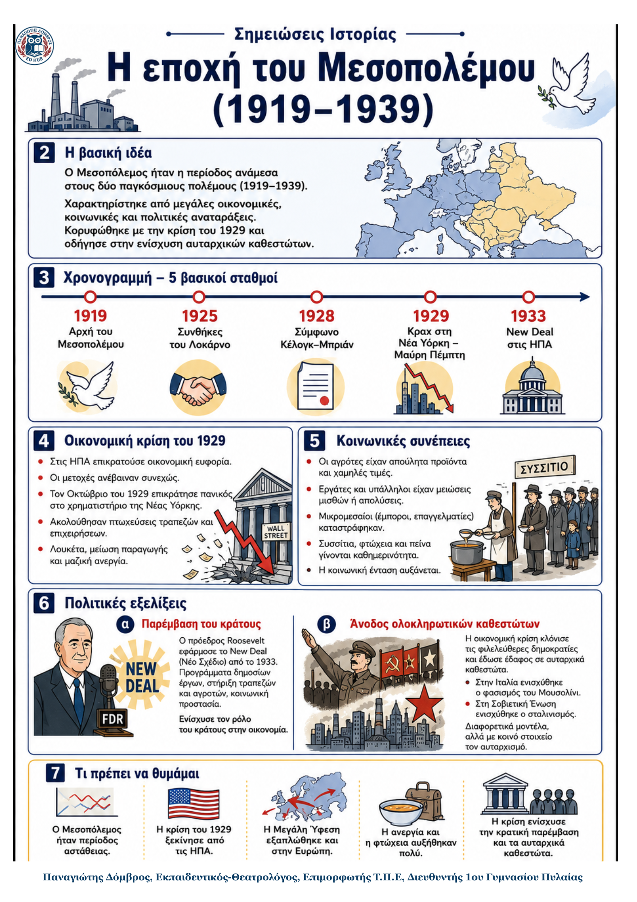

Δεν βρέθηκε η λέξη ή η φράση μέσα στην ενότητα.
1Η βασική ιδέα
2Ιστορικό πλαίσιο
Ο Α΄ Παγκόσμιος πόλεμος άφησε 8 εκατομμύρια νεκρούς, 6 εκατομμύρια αναπήρους και τεράστιες υλικές ζημιές.
Η Βρετανία και η Γαλλία χρωστούσαν μεγάλα ποσά στις ΗΠΑ. Έτσι, η αμερικανική οικονομία και διεθνής θέση ενισχύθηκαν.
Η κοινωνία άλλαξε: τα μεσαία στρώματα υπέστησαν απώλειες, ενώ περισσότερες γυναίκες μπήκαν στην εργασία και απέκτησαν δικαίωμα ψήφου σε ορισμένες χώρες.
Στη δεκαετία του 1920 οι συνθήκες του Λοκάρνο (1925) και το σύμφωνο Κέλογκ-Μπριάν (1928) εξέφρασαν μια προσωρινή προσπάθεια συνεργασίας και ειρήνης.
3Από την ευημερία στη Μεγάλη Ύφεση
| 1. Ευημερία και αισιοδοξία | 2. Κραχ στη Νέα Υόρκη | 3. Παγκόσμια εξάπλωση |
|---|---|---|
| Στις ΗΠΑ η παραγωγή, τα εισοδήματα και οι τιμές των μετοχών αυξάνονταν. Πολλοί πίστευαν ότι η ευημερία θα συνεχιζόταν. | → Το φθινόπωρο του 1929 άρχισαν μαζικές πωλήσεις μετοχών. Στις 24 Οκτωβρίου, τη «Μαύρη Πέμπτη», οι τιμές κατέρρευσαν. | → Τράπεζες και επιχειρήσεις έκλεισαν. Τα αμερικανικά δάνεια αποσύρθηκαν από την Ευρώπη. Η κάμψη του 1929-1933 ονομάστηκε Μεγάλη Ύφεση και έπληξε και την Ελλάδα. |
4Τα κύρια σημεία
Κοινωνικές συνέπειες: αγρότες, εργάτες, υπάλληλοι και μικρομεσαίοι έχασαν εισοδήματα, εργασία ή επιχειρήσεις. Στις ΗΠΑ περίπου 12 εκατομμύρια άνθρωποι έμειναν άνεργοι.
Συγκέντρωση οικονομικής ισχύος: ορισμένες μεγάλες επιχειρήσεις αγόρασαν μικρότερες που κατέρρεαν και έγιναν ισχυρότερες.
Αμφισβήτηση του φιλελευθερισμού: η ελάχιστη κρατική παρέμβαση φαινόταν ανεπαρκής. Όλο και περισσότεροι ζητούσαν ενεργό ρόλο του κράτους.
New Deal: από το 1933 ο Φραγκλίνος Ρούζβελτ χρηματοδότησε δημόσια έργα και θέσεις εργασίας. Η οικονομία των ΗΠΑ άρχισε να βελτιώνεται από το 1934.
Διευθυνόμενη οικονομία: η κρατική παρέμβαση διαδόθηκε στην Ευρώπη. Το κράτος ανέλαβε ρόλο ρυθμιστή της οικονομικής ζωής.
5Η εποχή του Μεσοπολέμου: πολιτικές συνέπειες
Οι πολιτικές διαστάσεις της κρίσης
| Σοβιετική Ένωση | Φασιστική Ιταλία | Ναζιστική Γερμανία |
|---|---|---|
| Ηγέτης: Στάλιν. Η εκβιομηχάνιση προχώρησε γρήγορα, αλλά με βίαιες μεθόδους, διώξεις και μεγάλο κοινωνικό κόστος. Η συγκέντρωση της εξουσίας και η προσωπολατρία χαρακτήρισαν τον σταλινισμό. | Ηγέτης: Μπενίτο Μουσολίνι. Μετά την «πορεία προς τη Ρώμη» (1922) έγινε πρωθυπουργός. Ως το 1926 εγκαθίδρυσε ολοκληρωτικό κράτος με ένα κόμμα, βία, προπαγάνδα και έλεγχο της νεολαίας. | Ηγέτης: Αδόλφος Χίτλερ. Η ανεργία ενίσχυσε τους ναζί. Το 1932 έλαβαν 37,4% και τον Ιανουάριο του 1933 ο Χίτλερ έγινε καγκελάριος. Κατήργησε τα κόμματα και εφάρμοσε ρατσιστική, αντισημιτική πολιτική. |
Στην υπόλοιπη Ευρώπη, καθεστώτα φασιστικού τύπου επιβλήθηκαν σε πολλές χώρες. Ως αντίδραση, φιλελεύθερα και αριστερά κόμματα δημιούργησαν λαϊκά μέτωπα στη Γαλλία και την Ισπανία.
Η κρίση αύξησε την απογοήτευση από τις φιλελεύθερες δημοκρατίες και έκανε τις ακραίες προτάσεις να φαίνονται ελκυστικότερες σε πολλούς πολίτες.
6Κοινά γνωρίσματα των ολοκληρωτικών καθεστώτων
Μονοκομματική εξουσία: ένα κόμμα κυριαρχούσε και ο ηγέτης συγκέντρωνε τις βασικές εξουσίες.
Καταστολή: πολιτικοί αντίπαλοι φυλακίζονταν, διώκονταν ή δολοφονούνταν, ενώ οι ελευθερίες περιορίζονταν.
Προπαγάνδα και νεολαία: το κράτος χρησιμοποιούσε Τύπο, ραδιόφωνο, εκπαίδευση και οργανώσεις νέων για να επηρεάζει τους πολίτες.
Επιθετικός εθνικισμός: στον ναζισμό συνδέθηκε με ακραίο ρατσισμό και ιδιαίτερα βίαιη δίωξη των Εβραίων.
7Ορισμοί – γλωσσάρι
| Κραχ: απότομη και μεγάλη πτώση των τιμών στο χρηματιστήριο. | Μεγάλη Ύφεση: γενικευμένη οικονομική κάμψη, κυρίως από το 1929 έως το 1933. |
|---|---|
| New Deal: πρόγραμμα κρατικής παρέμβασης για εργασία, ανακούφιση και ανάκαμψη. | Ολοκληρωτικό κράτος: καθεστώς που επιδιώκει να ελέγχει πολιτική, κοινωνία, ενημέρωση και εκπαίδευση. |
| Προπαγάνδα: οργανωμένη προσπάθεια επηρεασμού των πολιτών. | Λαϊκό μέτωπο: συμμαχία φιλελεύθερων και αριστερών κομμάτων κατά του φασισμού. |
8Τι πρέπει να θυμάμαι
Ο Α΄ Παγκόσμιος πόλεμος αποδυνάμωσε την Ευρώπη και ενίσχυσε τις ΗΠΑ.
Το κραχ ξεκίνησε στη Νέα Υόρκη στις 24 Οκτωβρίου 1929.
Η κρίση εξαπλώθηκε στην Ευρώπη και οδήγησε στη Μεγάλη Ύφεση.
Η ανεργία και η φτώχεια έπληξαν κυρίως τα λαϊκά και τα μεσαία στρώματα.
Το New Deal έδειξε ότι το κράτος μπορούσε να παρεμβαίνει ενεργά στην οικονομία.
Η κρίση αποδυνάμωσε τις δημοκρατίες και ευνόησε αυταρχικές και ολοκληρωτικές λύσεις.
